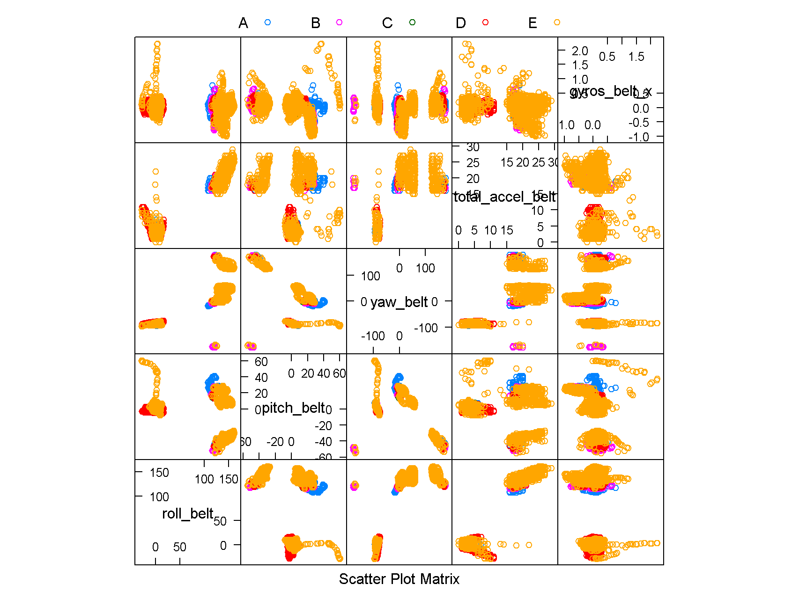

The aim of this piece of work is to explore using machine learning to determine how “correctly” one perfroms their physical workout. This is extremely important especially in atheletes and elderlies who are more susceptible to injuries from physical workouts.
In this study, large amount of data were collected from 6 participants. These data were from accelerometers on the belt, forearm, arm, and dumbell. The participant were asked to perform barbell lifts correctly and incorrectly in 5 different ways.
In this work, the sensor data are being divided into 3 datasets. The training set, the testing set and the validation set.
The strategy adopted to perform the machine learning is as follows:
Conduct various types of machine learning on the training set to construct the prediction model
Perform out of sample error estimation by applying the prediction model on the testing dataset
Select the most accurate prediction model
Apply the selected model on the validation set
# download and read the training and testing files
library(caret)
library(gbm)
#setInternet2(TRUE)
#trainfileloc <- "https://d396qusza40orc.cloudfront.net/predmachlearn/pml-training.csv"
#validatefileloc <- "https://d396qusza40orc.cloudfront.net/predmachlearn/pml-testing.csv"
#download.file(trainfileloc, "training.csv")
#download.file(validatefileloc, "validate.csv")
train <- read.csv("training.csv",na.strings=c("NA",""), stringsAsFactors=F)
validate <- read.csv("validate.csv")
set.seed(1234)
inTrain <- createDataPartition(y=train$classe, p=0.7, list=F)
test <- train[-inTrain,]
train <- train[inTrain,]Before we proceed to perform the machine learning on the data, the raw data must be processed to extract variables that are relevant for predictions and to addresss missing and/or NA values.
The approach taken is as follows:
Remove features having almost zero variance: This is to remove variables with very few unique values
Remove features with many NAs: Analysis into the training dataset showed that most of the columns either have more than 90% of NAs or less than 10% of NAs. Hence columns having more than 90% values being NAs are removed from the analysis
Keep data with complete cases
#remove near zero value
nzv <- nearZeroVar(train)
train.process <- train[,-nzv]
#remove columns with large number of NA
na.test <- function(x) {
sum(is.na(x))
}
try <- apply(train.process,2,na.test)
try <- try/nrow(train.process)*100 #percentage of NAs in each column
try.select <- data.frame(try[try<0.9]) #keep columns having less than 90% of NA values, ie more than 90% of enerties are NA, we discard the column
train.process <- subset(train.process, select=c(rownames(try.select)))
#remove some column names such as "X", "user_name", "raw_timestamp_part_1",
#"raw_timestamp_part_2", "cvtd_timestamp", "num_window"
train.process <- train.process[,-(1:6)]
train.proC <- train.process[complete.cases(train.process),] #keep only completecase enteriesTo ensure the reproducibility of the results, 4567 is set as the seed for the calculations.
The models experimented include
RandomForest
Stochastic Gradient Boosting
Linear Discriminant Analysis
RandomForest with principle component analysis (PCA) implemented
The reason for experimenting a random forest model with PCA implemented is to study the accuracy difference of random forest with and without PCA. As random forest is a very computation intensive learning algorithm, if the accuracy is not affected by the presence of PCA, it would be worth considering trading off a little accuracy for faster computation time.
To obtain better acccuracy, a 10-fold cross validation was used with the command trainControl(method=“cv”, number=10)
In the PCA preprocessing step, a threshold was set to collect 99% of the variance in the data.
set.seed(4567)
#train control setting
fitControl <- trainControl(method="cv", number=10)
fitControl.pca <- trainControl(method="cv", number=10, preProcOptions = list(thresh = 0.99, ICAcomp = 3, k = 5))
#various types of models
#randomForest model
lag.rf <- system.time(modFit.rf <- train(factor(classe)~., method="rf", trControl = fitControl, data=train.proC))
#gbm model
lag.gbm <- system.time(modFit.gbm <- train(factor(classe)~., method="gbm", trControl=fitControl, data=train.proC, verbose=F))
#lda model
lag.lda <- system.time(modFit.lda <- train(factor(classe)~., method="lda", trControl=fitControl, data=train.proC))
#randomForest with pca model
lag.rfpca <- system.time(modFit.rfpca <- train(factor(classe)~., method="rf", trControl = fitControl.pca, preProcess = "pca", data=train.proC))library(caret)
calacc <- function(modelObj){
acc <- confusionMatrix(test$classe,predict(modelObj,test))
acc <- acc$overall[1]
return(acc)
}
modList <- list(modFit.rf,modFit.gbm,modFit.lda,modFit.rfpca)
calsummary <- data.frame(lapply(modList,calacc))
names(calsummary) <- c("RandomForest","GBM","LDA","RandomForest-PCA")
calsummary <- rbind(calsummary,c(lag.rf[3],lag.gbm[3],lag.lda[3],lag.rfpca[3]))
row.names(calsummary) <- c("Accuracy","Elapsed Time")| RandomForest | GBM | LDA | RandomForest-PCA | |
|---|---|---|---|---|
| Accuracy | 0.99 | 0.96 | 0.70 | 0.98 |
| Elapsed Time | 1847.07 | 723.55 | 4.43 | 1628.12 |
From the table above, we see that using PCA to reduce the rank of the training set does not give significantly less processing time. Hence considering the amount of time used and the accuracy, we would use the Random Forest model as or final model.
In this section, it would be interesting to explore the relationships among the top 5 most important variables used for modelling (Random Forest).
x <- varImp(modFit.rf)$importance
x <- row.names(x)
x <- x[1:5]
train.sub <- subset(train, select=c(x,"classe"))
train.sub$classe <- factor(train.sub$classe)
featurePlot(x=train.sub[,-6], y=train.sub[,6],plot="pairs", auto.key=list(columns=5))
From the plot above, we see that “roll_belt” variable gives very distinct clustering of the data. This might suggest that it helps captures most of the key features in the dataset. As compared to “gyros_belt_x”, which has a larger tendency to form featureless plots.